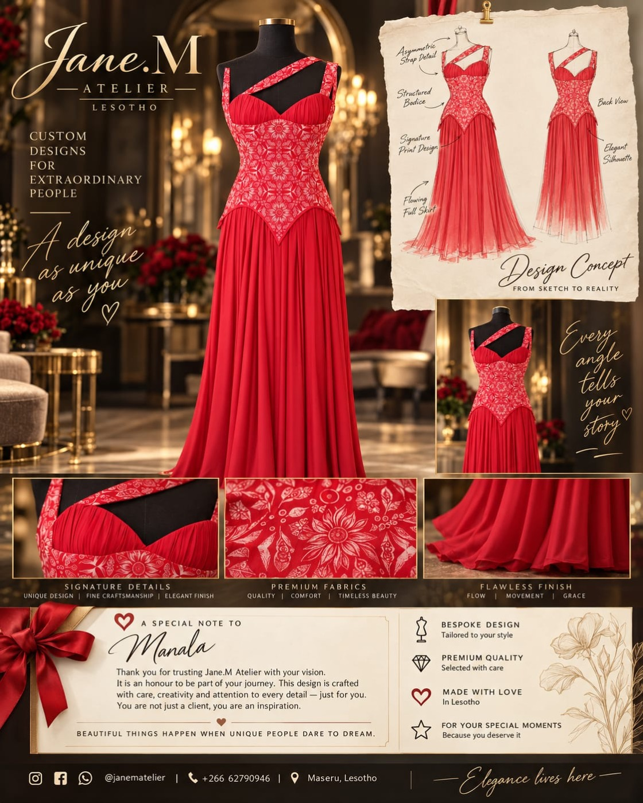

View full appreciation cardOccasionwear · Delivered
’Manala’s red occasion dress
For ’Manala, a vivid red palette brings together a structured, patterned bodice and a flowing skirt. The asymmetric strap adds a distinctive line, balancing the detail above with the softer movement below.
The appreciation card brings the design sketches and garment details together, tracing the look from its drawn silhouette to the finished piece shown in the video. A personal note from Jane.M completes the delivery: a small keepsake to accompany a dress made for her.